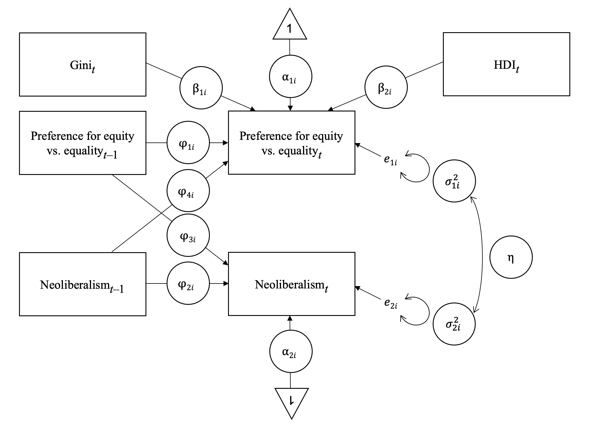
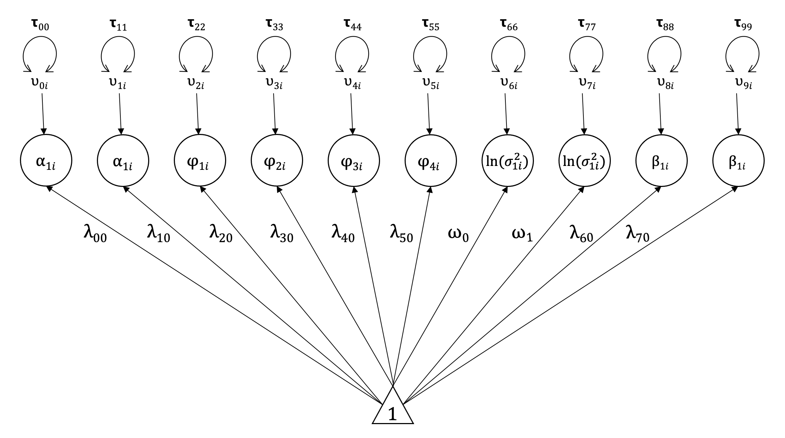
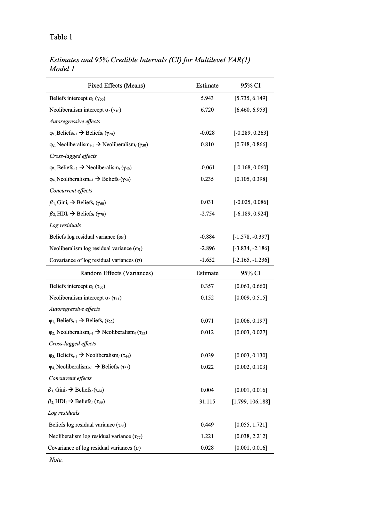
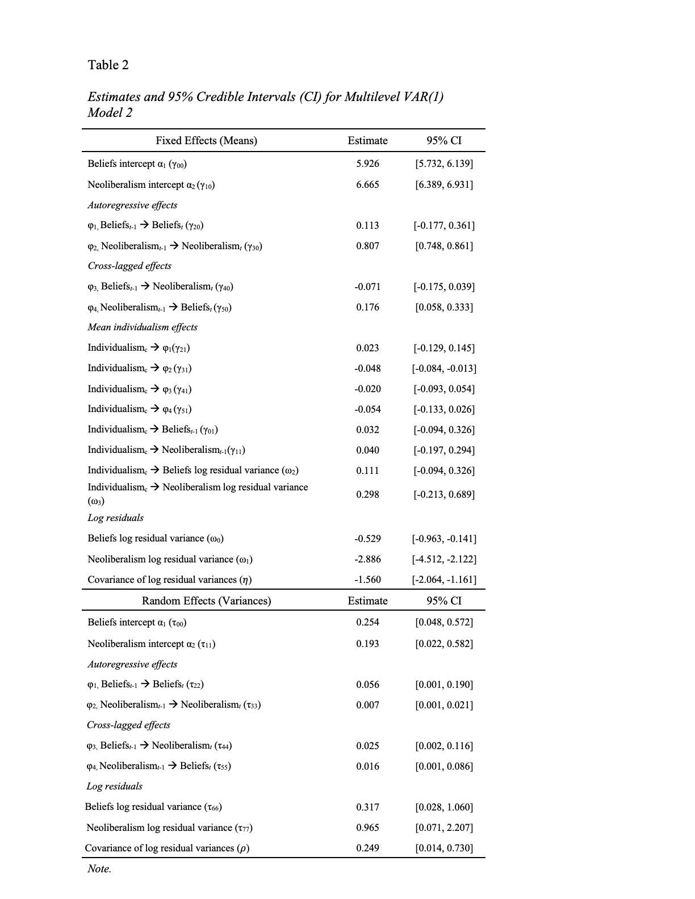
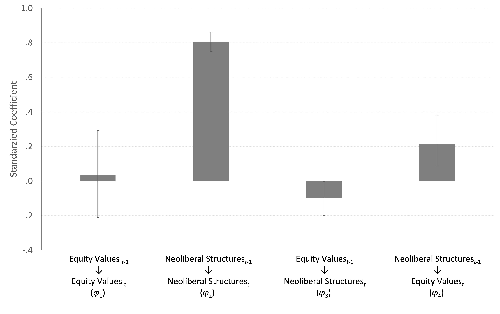

DATA: FILE = DSEM_all.dat;
VARIABLE: NAMES ARE COUNTRY WAVE E035 fact4
HDI gini Ind1_ti Ind1_tv;
USEVARIABLES E035 fact4 gini HDI;
Missing are all (9999);
Lagged = E035(1) fact4(1);
cluster=COUNTRY;
TINTERVAL=WAVE(1);
ANALYSIS: TYPE = TWOLEVEL RANDOM;
estimator=bayes;
FBITER = (20000);
thin = (10);
PROCESSORS = 4;
MODEL:
%WITHIN%
PHI1 | E035 on E035&1;
! E035 is regressed on Lag-1 E035,phi_1i
!the slope is latent
PHI2 | fact4 ON fact4&1;
! neoliberalism is regressed on Lag-1 neoliberalism,phi_2i
!the slope is latent
PHI3 | fact4 ON E035&1;
!neoliberalism is regressed on Lag-1 E035, phi_3i
!the slope is latent;
PHI4 | E035 ON fact4&1;
!E035 is regress on Lag-1 neoliberalism, phi_4i
!the slope is latent;
BETA1 | E035 on gini;! slope of gini on E035, Beta_1i
BETA2 | E035 on HDI;! slope of HDI on E035, Beta_2i
LogV1|E035;
!the Within-Level residual variance of E035 is latent, !sigma^2_1i;
LogV2|fact4;
!the Within-Level residual variance of neoliberalism is latent, !sigma^2_2i;
eta by E035@1 fact4@1; ! new factor, positive covariance between residuals
logpsi | eta; ! random covariance between residuals
%BETWEEN%
[E035]; !mean intercept of E035, gamma_00;
[fact4]; !mean intercept of neoliberalism, gamma_10;
[PHI1]; !mean of E035 autoregressive slope,gamma_20;
[PHI2]; !mean of neoliberalism autoregressive slope,gamma_30;
[PHI3]; !mean of neoliberalism on E035&1 slope,gamma_40;
[PHI4]; !mean of E035 on Neoliberalism&1 slope,gamma_50;
[BETA1]; ! mean of E035 on gini slope,gamma_60;
[BETA2]; !mean of E035 on HDI slope, gamma_70;
[Logv1]; !mean of log residuals E035, omega_0;
[Logv2]; !mean of log residuals neoliberalism, omega_1;
E035; !E035 intercept variance, tau_00;
fact4; !neoliberalism intercept variance, tau_11;
PHI1; !E035 autoregressive slope variance, tau_22;
PHI2; !neoliberalism autoregressive slope variance, tau_33;
PHI3; !neoliberalism on E035&1 slope variance, tau_44;
PHI4; !E035 on neoliberalism&1 slope variance,tau_55;
BETA1; !E035 on gini slope variance,tau_88
BETA2; !E035 on gini slope variance,tau_99
Logv1; !variance of log residual E035, tau_66;
Logv2; !Variance of log residuals neolib, tau_77;
[gini];
[hdi];
gini;
hdi;
OUTPUT:
standardized; ! standardized results, refer to STDYX
tech8; ! tech8 provides output for PSR value
SAVEDATA:
SAVE = FSCORES(50 10);!save individual country estimates
file is datamodel1.dat;
PLOT:
TYPE = PLOT2; ! creates trace plots and autocorrelation plotsDynamic Analysis of Economic Policies and Attitudes toward Income Inequality
DSEM
Panel data
Mplus
Do economic institutions influence our beliefs about economic inequality over time?
Background
Neoliberalism refers to free market policies of reduced welfare spending, privatization, and deregulation of labor markets. One reason advocates argue for enacting these policies is that they reward hard work, rather than free riding. In this project, we examined how variations in market-oriented policies relate to beliefs about income inequality in more than 160 countries over more than two decades.
Data
Free Market Economic policies data: Composite of items from Fraser Institute’s Economic Freedom Index (EFI), such as government consumption, transfers and subsidies, top marginal income and payroll tax, hiring and firing regulation, centralized collective bargaining.
Attitudes towards income inequality survey measure from WVS with answers ranging from “Incomes should be made more equal” (1) to “There should be greater incentives for individual effort” (10)
Analysis was conducted on five waves of data, from WVS Waves 3 (1995–1998) through 7 (2017–2019).
Models
To merge the EFI and WVS data sets, we averaged our index of policies across the years containing each WVS wave.
Models have two outcome variables: neoliberal economic policies and income inequality attitudes.
In Model 1, policies and attitudes for country i at time t are predicted from policies and attitudes at the preceding measurement occasion (t – 1), while adjusting for economic development (HDI) and Gini at time t.
Model 2 included an indicator of individualism as a time-invariant covariate.


Show Mplus code: Model 1
Show Mplus code: Model 2
DATA: FILE IS DSEM_all.dat;
VARIABLE: NAMES ARE COUNTRY WAVE E035 fact4
HDI gini Ind1_ti Ind1_tv;
USEVARIABLES E035 fact4 Ind1_ti;
Missing are all (9999);
Lagged = E035(1) fact4(1);
BETWEEN= Ind1_ti;
cluster=COUNTRY;
TINTERVAL=WAVE(1);
DEFINE: CENTER Ind1_ti (GRANDMEAN);
ANALYSIS: TYPE = TWOLEVEL RANDOM;
estimator=bayes;
fbiter=(10000);
thin= (10);
MODEL:
%WITHIN%
PHI1 | E035 on E035&1;
! E035 is regressed on Lag-1 E035,phi_1i
!the slope is latent vertical pipe meand paths are person-specific and latent variables in the between-level model
PHI2 | fact4 ON fact4&1;
! neoliberalism is regressed on Lag-1 neoliberalism,phi_2i
!the slope is latent
PHI3 |fact4 ON E035&1;
!neoliberalism is regressed on Lag-1 E035, phi_3i
!the slope is latent;
PHI4 |E035 ON fact4&1;
!E035 is regress on Lag-1 neoliberalism, phi_4i
!the slope is latent;
LogV1|E035;
!the Within-Level residual variance of E035 is latent, !sigma^2_1i;
LogV2|fact4;
!the Within-Level residual variance of neoliberalism is latent, !sigma^2_2i;
eta by E035@1 fact4@1; ! new factor, positive covariance between residuals
logpsi | eta; ! random covariance between residuals
%BETWEEN%
[E035]; !mean intercept of E035, gamma_00;
[fact4]; !mean intercept of neoliberalism, gamma_10;
[PHI1]; !mean of E035 autoregressive slope,gamma_20;
[PHI2]; !mean of neoliberalism autoregressive slope,gamma_30;
[PHI3]; !mean of neoliberalism on E035&1 slope,gamma_40;
[PHI4]; !mean of E035 on Neoliberalism&1 slope,gamma_50;
[LogV1];
!log of the mean of the E035 residual variance, omega_0;
[LogV2];
!log of the mean of the neoliberalism residual variance, omega_1;
E035; !E035 intercept variance, tau_00;
fact4; !neoliberalism intercept variance, tau_11;
PHI1; !E035 autoregressive slope variance, tau_22;
PHI2; !neoliberalism autoregressive slope variance, tau_33;
PHI3; !neoliberalism on E035&1 slope variance, tau_44;
PHI4; !E035 on neoliberalism&1 slope,tau_55;
LogV1; !between-person variance of E035 residual variance, tau_66;
LogV2; !between-person variance of neoliberalism residual variance, tau_77;
E035 on Ind1_ti;
!The country-specific intercept of E035 is predicted by individualism, gamma_01;
fact4 on Ind1_ti;
!The country-specific intercept of E035 is predicted by individualism, gamma_11;
PHI1 on Ind1_ti;
!The country-specific autoregressive slope of E035 is predicted by individualism, gamma_21;
PHI2 on Ind1_ti;
!Thecountry-specific autoregressive slope of neoliberalism is predicted by individualism, gamma_31;
PHI3 on Ind1_ti;
!The country-specific slope of E035 is predicted by individualism, gamma_41;
PHI4 on Ind1_ti;
!The country-specific slope of neoliberalism is predicted by individualism, gamma_51;
LOGV1 on Ind1_ti;
!The country-specific residual variance of E035 is predicted by individualism, omega_2;
LOGV2 on Ind1_ti;
!The country-specific residual variance of neolliberalism is predicted by individualism, omega_3;
OUTPUT:
standardized; ! standardized results, refer to STDYX
tech8; ! tech8 provides output for PSR value
PLOT:
TYPE = PLOT2; ! creates trace plots and autocorrelation plotsResults
As shown in Table 1, Lag-1 neoliberalism predicted higher preference for income inequality at time t (φ4i), whereas Lag-1 preference for income inequality did not predict neoliberalism at time t (φ3i) when we adjusted for the time-varying effects of HDI and Gini.



Takeaways
Data from more than 160 countries collected in the past 2 decades suggest that neoliberal systems have been instrumental in promoting preferences for income inequality
More generally, this work provides evidence that people’s beliefs about inequality are influenced by socioeconomic institutions and policies.
Paper: Goudarzi, S., Badaan, V., & Knowles, E. D. (2022). Neoliberalism and the ideological construction of equity beliefs. Perspectives on Psychological Science, 17(5), 1–21.